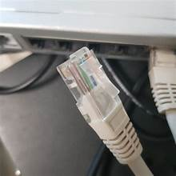
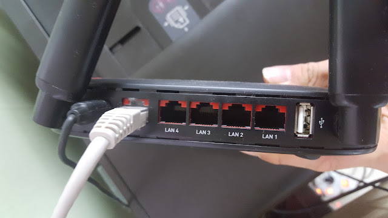

설명서1
수강신청의 사전준비 과정입니다.
좌측 사이드바의 인터넷 테스트를 클릭하여 인터넷의 속도를 측정해보세요.
자신의 컴퓨터와 피시방이나 여타 pc의 인터넷 환경을 비교해볼 수 있습니다.
숫자가 높을수록 빠른 것이며
인터넷 뿐만 아니라 키보드, 마우스 등 대부분의 경우
무선장비는 유선비해 딜레이가 발생합니다.
비교 후 기기를 선택하였다면 좌측 사이드바의 설명서2를 따라주세요.
유선 인터넷(랜선) LAN

